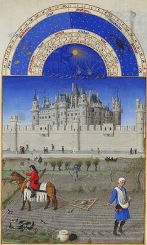

르네상스 시대

중세 시대 때인 1202년에 국왕 필리프 오귀스트가 이곳에 성채를 축조한 데서 비롯되었고 14세기 샤를 5세의 시대부터 왕궁으로 쓰였다.
1527년 프랑수아 1세는 중세의 루브르 성 개조를 계획, 전부를 헐어버리고 르네상스 양식의 새로운 궁전을 세울 것을 결정, 피에르 레스코와 장 구종이 설계를 담당, 레스코가 현재의 살 데 카리아티드(여인 기둥의 방)와 국왕의 2층 거실을 세우고 내외의 조각 장식은 장 구종이 담당했다.
이후 1563년 앙리 2세의 왕비 카트린느 드 메디시스가 왕궁의 서쪽에 튈르리 궁전을 세웠고 이후 앙리 4세 시대에 걸쳐 센강 연변에 ‘물가의 장랑’이라 불리는 그랜드 갤러리(그랑드 갈르리)를 증축하여 루브르와 튈르리 두 궁전을 연결시켰다. 이후 이 회랑은 주로 궁정의 화가·조각가·공예 작가 등의 주거지 겸 공방으로 사용되었다.
이후 1624년 재상 리슐리외는 건축가인 자크 르메르시에에게 명하여 루브르 궁 확장 공사를 시행하였다.